前言
由谷歌团队提出的预训练语言模型BERT近年来正在各大自然语言处理任务中屠榜（话说学者们也挺有意思的，模型名都强行凑个芝麻街的人物名，哈哈哈）。 BERT算法的最重要的部分便是Transformer的概念，它本质上是Transformer的编码器部分。 而Transformer中使用了Self-Attention机制，所以本文会从Attention机制说起。
本文是我对Attention、Transformer和BERT的学习总结。同时参考了一些书籍和网上的资料编写而成。写这篇文章的主要目的是加深自己的理解，如有错误欢迎在评论区指出，非常感谢！
Attention机制
注意力模型（Attention Model） 是深度学习领域最有影响力的思想之一。 它模仿了人类观察文本或图像时的注意力，解决了长序列问题，尤其在机器翻译等领域应用广泛。
RNN模型如何解决机器翻译问题
我们以机器翻译问题作为基础，逐步讲解注意力机制及它的优缺点。首先，我们来看RNN模型是如何解决机器翻译问题的。事实上，这在我之前的RNN博客中已经提到过了，这是一个Many to Many（$T_x!=T_y$）的Seq2Seq序列标注问题。
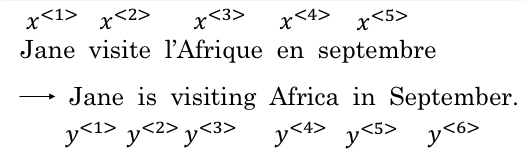
下图为RNN解决这一类输入序列和输出序列长度不等的序列标注问题的常用模型结构：
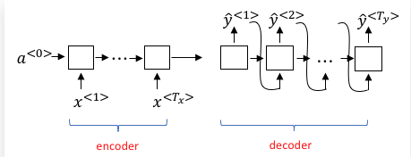
可以看到，RNN模型此时被分为了两个部分：编码器部分（Encoder）和解码器部分（Decoder）。
编码器部分没有Softmax层预测输出，它的作用仅仅是将源语言文本传入到一个RNN网络（具体可以是GRU、LSTM等），然后在网络的出口处提取最后一个时间步的激活值输出，并且传入解码器。编码器最后一个时间步的激活值输出因为走过了整个源文本序列，所以可以认为它蕴含了需要翻译的整个句子的信息。它的维度与RNN单元的隐藏层神经元数目一致。当然了，这里的RNN可以是深层的，但我们只以单隐藏层的RNN进行讲解。
解码器部分可以看作是一个条件语言模型（Language Model，例如我们常见的AI写诗模型）。它的作用是通过编码器输入的激活值，生成当前条件下最大概率的目标语言句子。它与常规的语言模型有两点不同：
- 语言模型零时刻的激活值为零向量，而机器翻译模型解码器的零时刻的激活值为编码器结尾的时间步激活输出。
- 语言模型为了保证生成句子的多样性，所以每个时间步的输出都是按照概率分布随机生成的。而机器翻译模型很明显需要翻译出最准确的结果，所以输出的序列应是全局最大概率的序列。
这个语言模型中，每个RNN单元的输出来自两个方面：
- 前一个时间步RNN单元的激活值输出。
- 前一个时间步Softmax层预测的输出$\hat y_{t-1}$。
顺便提一下，机器翻译问题中的全局最优解问题和CRF、HMM等常规机器学习的序列标注模型中类似，可以使用维特比算法来解，在对应的博客中都可以找到相应的说明。如果我们使用贪心算法，将可能陷入局部最优解中。
特别地，我们发现，当词汇表规模很大时，即使是动态规划的维特比算法，其时空复杂度也会很高（时间复杂度：$O(MN^2)$，$Ｍ$为时序数，$N$为词汇表大小）。为了降低计算量，科学家们提出了集束搜索（Beam Search）的方法，即第一次输出时选取概率最高的$B$个单词，并将它们作为输入投入第二个时间步，第二次输出时仍然只选概率最高的$B$个单词……以此类推，到最后只会产生$B$条预测序列，我们选取概率最大的的作为最终的结果。这样做，其实就是在贪心搜索和维特比算法之间进行平衡，当$B=1$时，集束搜索退化成贪心算法，当$B=N$时，集束搜索演变成维特比算法。
RNN+Attention解决机器翻译问题
上述RNN架构存在着一些问题，例如：我们用编码器的最后一个时序的激活值输出作为解码器的初始激活值，也就是说编码器的最后一个激活值向量需要承载源句子的所有信息，这在输入的句子长度变长时，容易成为整个模型的“信息”瓶颈。
如下图所示，一个最基本的RNN机器翻译模型，当句子长度变长时，翻译的效果（Bleu得分）将逐渐降低：
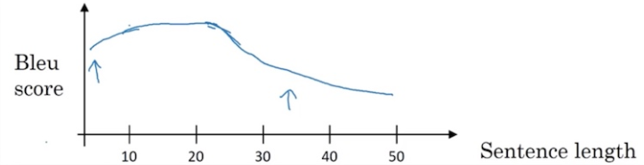
为了解决这个问题，科学家们提出了Attention模型，它将编码器的每个时序隐藏层直接与解码器每个时序的隐藏层相连接，相等于提供了捷径，解码器的预测可以直接利用编码器在每个源文本单词处的编码结果，从而解决了“信息”瓶颈问题。
首先，我们使用一个BRNN来做编码器，每个时序的输出都是该处源文本单词丰富的特征。BRNN可以充分的利用上下文全部的信息。如下图所示，$\hat y_t’$为$t’$时刻RNN单元前向后向激活的向量拼接。
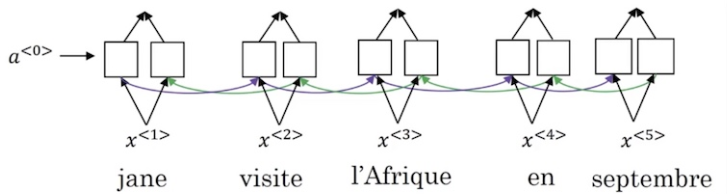
接着，我们使用一个RNN来做解码器。RNN的输入除了上一时刻的激活输出向量、上一时刻的预测结果向量，还要加入注意力输出（Attention Output）。为了计算解码器在第$t$时刻需要输入的Attention Output，我们通过给编码器各时序的输出$\hat y_{t’}$一个注意力权重（Attention Weight）$\alpha_{t,t’}$，来对它们进行加权求和。如下图所示：
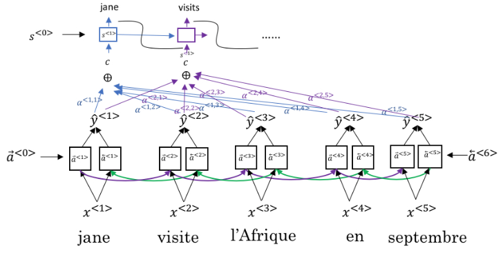
我们可以将解码器的每个时刻单独拎出来：
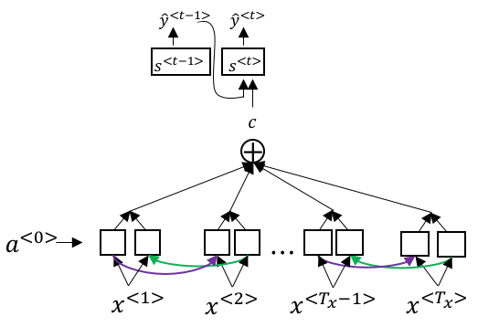
那么，如何计算注意力权重呢？一种比较常用的方法是利用解码器RNN上一时刻的激活向量$s_{t-1}$和编码器此时刻的输出向量$a_{t’}$做点积（dot product）操作，所得结果记为注意力得分（Attention Score）$e_{t,t’}$。
$$
e_{t,t’}=s_{t-1}^Ta_{t’}
$$
显然，注意力权重$\alpha_{t,t’}$需要满足值域在[0,1]，且各时刻$t’$的注意力权重之和为1。所以，我们需要使用Softmax非线性函数进行转化：
$$
\alpha_{t,t’}=Softmax(e_{t,t’})
$$
具体流程可以参考cs224n上的这页ppt：
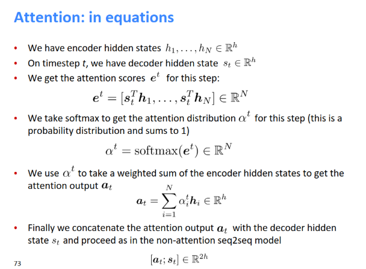
上面讲解的只是最基本的点积注意力，还有其他几种Attention，本质都是一样的：
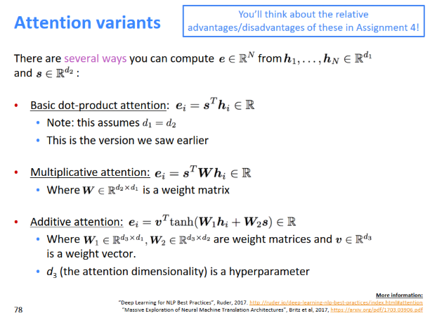
Attention机制的优点如下：
- 解决了传统RNN架构的“信息“瓶颈问题。
- 让解码器有选择性地注意与当前翻译相关的源句子中的词。
- 通过使编码器的各时序隐藏层和解码器各时序隐藏层直接相连，使梯度可以更加直接地进行反向传播，缓解了梯度消失问题。
- 增加了机器翻译模型的可解释性。
Transformer模型
尽管RNN+Attention的模型非常有效，但它同时也存在着一些缺陷。RNN最主要的缺陷在于：它的计算是有时序依赖的，需要用到前一个时间步或者后一个时间步的信息，这导致它难以并行计算，只能串行计算。而当今时代，GPU的并行化能够大大加速计算过程，如果不能够并行计算，会导致运算速度很低。
为了解决这个问题，科学家们首先提出了使用CNN代替RNN做特征抽取器。通过多层卷积运算，CNN的上层将能够完整地考虑整个时序的信息：
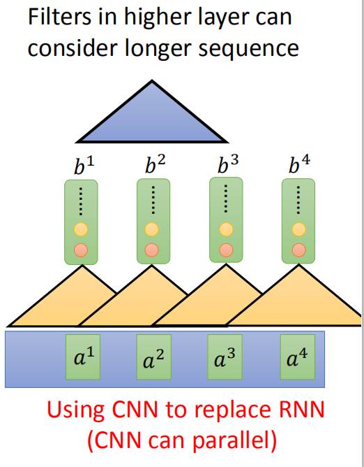
CNN的优势在于可以并行计算，没有时序依赖。但同时它也有一个缺陷：CNN需要经过多层计算才能获取长序列的资讯，下层CNN只能看到较小的范围。
为了能够进行并行计算，又不需要多层迭代，科学家们提出了Transformer模型。它的论文题目很霸气《Attention is All You Need》。正如题目所说，Transformer模型通过采用Self-Attention自注意力机制，完全抛弃了传统RNN在水平方向的传播，只在垂直方向上传播，只需要不断叠加Self-Attention层即可。这样，每一层的计算都可以并行进行，可以使用GPU进行加速。
你可以使用Self-Attention层来完成任何RNN层可以做到的事情：
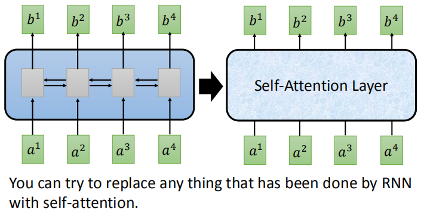
Self-Attention机制
Self-Attention层的基本结构如下图所示：
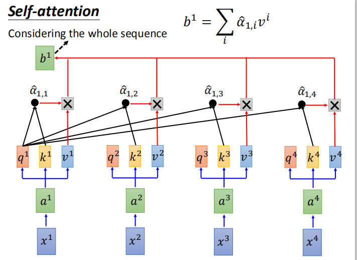
我们以Self-Attention层的第一个输出$b_1$的计算为例。Self-Attention层计算的流程如下：
- 首先，我们以第一个单词的Word2Vec等词向量作为输入$x_1$。通过与一个参数矩阵$W_a$相乘，我们对$x_1$又进行了一次嵌入，得到了$a_1$向量（这里相当于是一个全连接层）。
- 接着，我们需要给定三个参数矩阵，分别为$W_q$、$W_k$、和$W_v$，通过三次矩阵乘法，我们从$a_1$计算得到$q_1$、$k_1$、$v_1$三个向量。（相当于三个分开的全连接层）。（需要注意，所有时序的计算共享上述四个参数矩阵）其中，$q$向量称为query向量，用于匹配其它时序的$k$向量；$k$向量称为match向量，用于被其他时序的$q$向量匹配；$v$向量即为当前时序的要被抽取的信息。
- 然后，与上一节所说的Attention权重计算方式类似。我们先计算输出时序 1 对各输入时序 i 注意力得分$\alpha_{1,i}$，它是由时序1处的query向量$q$和各处的key向量$k$做点积操作后得到：
$$
\alpha_{1,i}=q_1^Tk_i
$$
为了保持梯度稳定，我们还要除以向量$q$和向量$k$共同的维度$d$的平方根，这一步叫做Score归一化。
$$
\alpha_{1,i}=\frac{q_1^Tk_i}{\sqrt{d}}
$$
接着，我们需要使用非线性函数Softmax对注意力分数进行概率转化，得到注意力权重$\hat \alpha_{1,i}$。
$$
\hat \alpha_{1,i}=\frac{e^{\alpha_{1,i}}}{\sum_{j=1}^{n}e^{\alpha_{1,j}}}
$$最后，我们使用计算得到的注意力权重对各时序的信息向量$v_i$进行加权求和运算，即可得到输出$b_1$。
$$
b_1=\sum_{i=1}^n\hat \alpha_{1,i}v_i
$$
以上就是Self-Attention层计算的全过程。可以看到，Self-Attention层在水平方向上不会进行任何计算，也就可以使用矩阵进行并行化：
$$
B=\hat A V=Softmax(\frac{Q^TK}{\sqrt{d}})V
$$
Self-Attention的优点：
- 因为每个词都和周围所有词做attention，所以任意两个位置都相当于有直连线路，可捕获长距离依赖。
- 而且Attention的可解释性更好，根据Attention score可以知道一个词和哪些词的关系比较大。
- 易于并行化，当前层的Attention计算只和前一层的值有关，所以一层的所有节点可并行执行self-attention操作。
- 计算效率高，一次Self-Attention只需要两次矩阵运算，速度很快。
特别地，如果我们每次产生多组$q$、$k$、$v$向量，这样的Self-Attention层叫做Multi-Head Self-Attention，即多头自注意力机制：
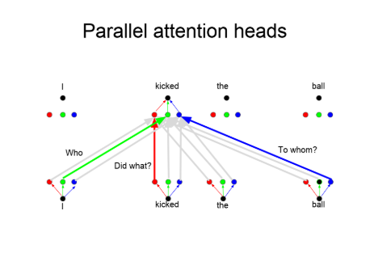
Multi-Head Self-Attention的优点：不同的head可以关注不同的重点，通过多个head可以关注到更多的信息。这有些相当于CNN中的不同filter。
此时，Self-Attention层还存在着一个问题：虽然此时通过注意力机制，可以有针对性地捕捉整个句子的信息，但是没有位置信息。 也就是说无论句子的结构怎么打乱，Transformer都会得到类似的结果。换句话说，Transformer只是一个功能更强大的词袋模型而已。
为了解决这个问题，研究人员中在编码词向量时引入了位置编码（Position Embedding）的特征。具体地说，位置编码会在词向量中加入了单词的位置信息，这样Transformer就能区分不同位置的单词了。
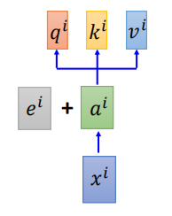
上述$e_i$即为第 i 时刻输入的位置信息。它可以是学习而来的，也可以手工设置。
Transformer的架构
介绍完了Self-Attention机制，我们就可以来看Transformer模型的基本架构了。其结构如下图所示：
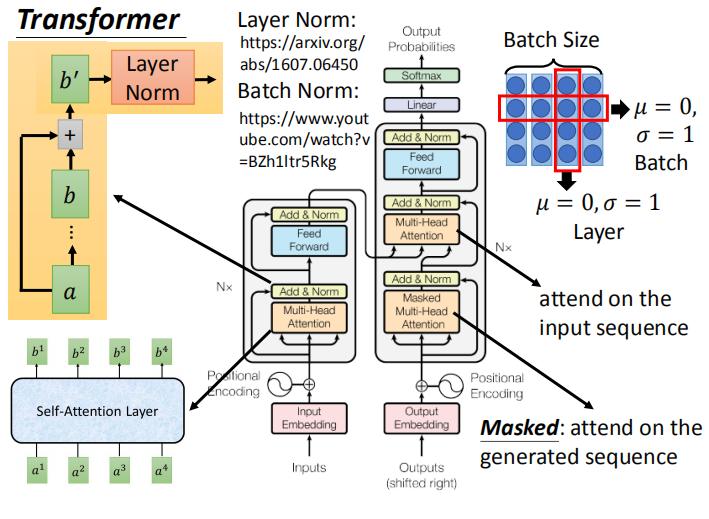
与传统RNN类似，它由编码器和解码器两部分组成。上面的结构有几点需要解释：
- Transformer中使用了ResNet中的 residual connection ，即残差连接，方便梯度的反向传播。
- Add&Norm指的是将残差路径上传来的向量和Self-Attention计算得到的向量相加后进行Layer-Normalization，即层标准化。Layer Norm对同一个样本同一层的所有神经元进行标准化，使它们满足标准正态分布，而Batch Norm则是对Batch内不同样本的同一个神经元所有值进行标准化。
- 编码器输出的两个箭头分别是输入给解码器第二个Multi-Head Self-Attention层的$k$和$v$，且$k=v$。相当于提供给解码器源文本信息。
- 解码器的Masked Multi-Head Self-Attention层之所以叫Masked，是因为由于语言模型的性质，生成当前词总是需要利用已生成的序列结果，相当于把后面的结果Masked掉了。所以Transformer解码时，仍然需要按照时序逐个递推计算，只不过大多数内部的计算可以并行化了。
- Feed-Forward层就是一个基本的全连接前馈层，一般使用ReLu激活函数。
通过上述架构，我们便可以构建Transformer模型，并且用于各种序列问题。Transformer模型中的注意力机制为翻译模型带来了可解释性，可视化如下：
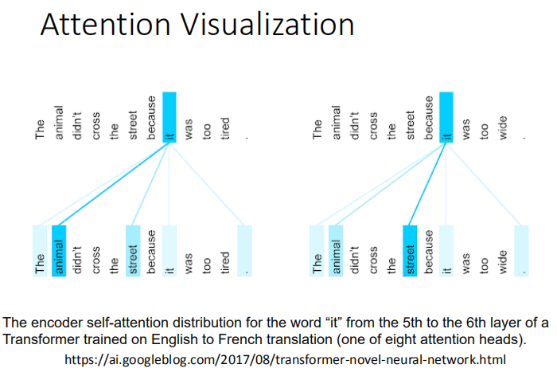
Transformer的优劣
优点：
- 虽然Transformer最终也没有逃脱传统学习的套路，Transformer也只是一个全连接（或者是一维卷积）加Attention的结合体。但是其设计已经足够有创新，因为其抛弃了在NLP中最根本的RNN或者CNN并且取得了非常不错的效果，算法的设计非常精彩，值得每个深度学习的相关人员仔细研究和品位。
- Transformer的设计最大的带来性能提升的关键是将任意两个单词的距离是1，这对解决NLP中棘手的长期依赖问题是非常有效的。
- Transformer不仅仅可以应用在NLP的机器翻译领域，甚至可以不局限于NLP领域，是非常有科研潜力的一个方向。
- 算法的并行性非常好，符合目前的硬件（主要指GPU）环境。
缺点：
- 粗暴的抛弃RNN和CNN虽然非常炫技，但是它也使模型丧失了捕捉局部特征的能力，RNN + CNN + Transformer的结合可能会带来更好的效果。
- Transformer失去的位置信息其实在NLP中非常重要，而论文中在特征向量中加入Position Embedding也只是一个权宜之计，并没有改变Transformer结构上的固有缺陷。
BERT模型
BERT模型介绍
BERT模型的全名叫做Bidirectional Encoder Representation from Transformers。从名称上就可以看出，BERT模型和Transformer模型联系紧密，事实上，它就是Transformer模型的编码器部分。
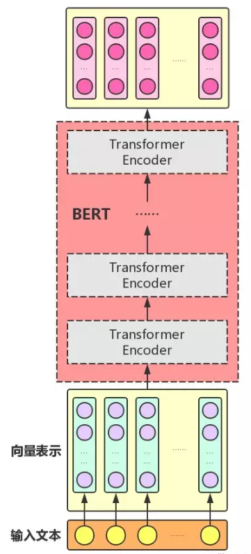
BERT模型本质上是一个自编码语言模型（Autoencoder LM），并且其设计了两个任务来预训练该模型：
- Masked Language Model：这个方式的灵感很大程度上来自于Word2Vec模型中的连续词袋模型CBOW。与完型填空类似，该方法在句子中随机遮盖住15%的单词（ 80%的概率替换成[MASK] 、 10%的概率替换成随机的一个词 、10%的概率替换成它本身 ），并且用剩下的单词去预测它们。如下图所示，我们将需要预测的单词的BERT词向量输出传入一个线性分类器（如Softmax BPNN），即可用交叉熵损失函数训练模型。
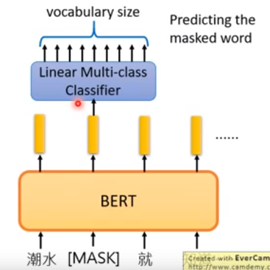
- Next Sentence Prediction：该方法的描述是：给定一篇文章中的两句话，判断第二句话在文本中是否紧跟在第一句话之后，如下图所示。我们插入[SEP]标志表示句子的分隔符，插入[CLS]表示开始预测的位置。通过预测两个句子正确的连接，即可训练模型。
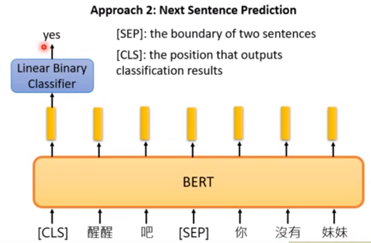
BERT模型的主要输入是文本中各个字/词(或者称为token)的原始词向量，该向量既可以随机初始化，也可以利用Word2Vec等算法进行预训练以作为初始值；输出是文本中各个字/词融合了全文语义信息后的向量表示 。
此外，BERT模型的输入还有以下两个向量：
- Transformer模型要求的位置编码向量（ Position Embeddings ）：刻画词在句子中的位置信息。
- 文本向量（Segment Embeddings）： 该向量的取值在模型训练过程中自动学习，用于刻画文本的全局语义信息，并与单字/词的语义信息相融合
BERT模型的使用
Word2Vec、GloVe、ELMo等模型是通过语言模型任务得到句子中单词的embedding表示，以此作为补充的新特征给下游任务使用。因为给下游提供的是每个单词的特征形式，所以这一类预训练的方法被称为“Feature-based Pre-Training”。而BERT模型是“基于Fine-tuning的模式”，这种做法和图像领域基于Fine-tuning（微调）的方式基本一致，下游任务需要将模型改造成BERT模型，才可利用BERT模型预训练好的参数。
尽管我们可以从网上下载别人训练好的BERT模型，但是在实际应用在下游任务时，BERT模型的参数依然会不断进行自动微调。不过好处是不需要从头训练了，需要从头开始训练的只有我们下游任务自己的网络参数。
这里，李宏毅老师给出了BERT模型应用在常见的四种下游任务中的模型结构：

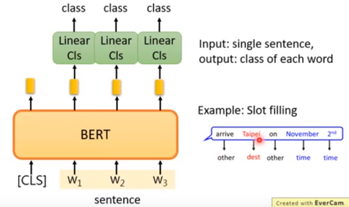
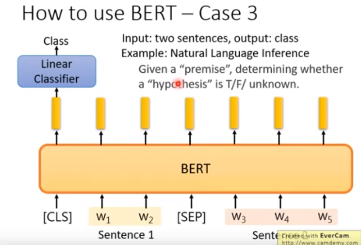
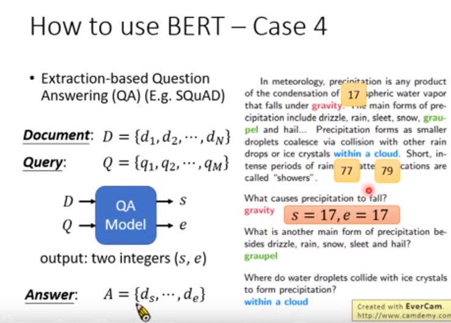
总结
以上就是我对Attention、Transformer和BERT模型的一些学习笔记，目前学的还是比较浅显，日后看到论文或者需要使用的时候再进一步加深理解。